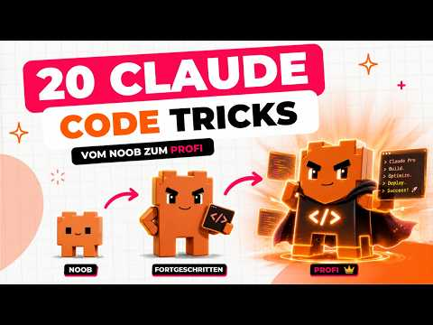

Selbststudium · Video-Transkript

Quelle: „Diese 20 Claude Code Tricks sparen dir Stunden" · Julian Ivanov | KI-Automatisierung · 24 Min · automatisch transkribiert
Keine komplizierten Techniken, sondern einfache Gewohnheiten für Prompting, Projekt-Setup und größere Multi-Schritt-Aufgaben. Funktioniert gleichermaßen im Terminal, in der Desktop-App und im VS-Code-Plugin.
Planmodus konsequent nutzen
Im Planmodus darf Claude nur lesen und analysieren, nichts ändern. Nutze ihn für echten Austausch: Feedback geben, Plan anpassen lassen, wiederholen — erst wenn der Plan wirklich passt, umschalten und loslegen lassen.
Sinnvoll vor allem bei neuen Projekten und größeren Änderungen an bestehendem Code. Spart massiv Korrekturschleifen und damit Tokens — relevant besonders auf dem Pro- statt Max-Plan.
Frag bevor du baust
Bei größeren Funktionen gezielt zu Rückfragen auffordern, statt Claude sofort loslegen zu lassen:
Diskutieren statt kommandieren
Claude nicht als Befehlsempfänger behandeln, sondern als Sparringspartner: Problem beschreiben statt fertige Lösung vorgeben. Statt bau mir ein Kontaktformular mit Name, E-Mail, Telefon lieber wie sollte ein Kontaktformular aussehen, damit möglichst viele Leute es ausfüllen? — Claude vergleicht dann Varianten und gibt eine Empfehlung, statt blind die Vorgabe umzusetzen.
Autoaccept-Modus + Permissions-Datei
Als Standardmodus (außer im Planmodus) empfohlen: Claude fragt dann nicht bei jedem Befehl nach, sondern nur noch bei wirklich riskanten Aktionen (z. B. Dateien löschen). Für mehr Kontrolle zusätzlich eine permissions.json anlegen lassen, die festlegt, welche Befehle erlaubt sind — etwa um sensible Dateien wie .env komplett zu sperren.
Sprechen statt tippen
Lange Prompts diktieren geht schneller und liefert oft mehr Kontext als Tippen. Terminal: einmalig /voice aktivieren. Desktop-App: eingebauter Diktier-Button. VS-Code-Plugin: vorhanden, aber eher für Englisch optimiert. Alternative systemweit (Mac/Windows, nicht nur Claude): externe Diktier-Tools wie Whisperflow.
Claude mit /init aufs Projekt einlernen
Jede neue Session startet mit leerem Kontext — nur bestimmte Dateien werden automatisch geladen. /init lässt Claude den gesamten Projektordner scannen (Struktur, Dateien, Konventionen) und daraus eine CLAUDE.md erzeugen, die künftig bei jeder Session automatisch mitgeladen wird.
CLAUDE.md aktiv pflegen
Wiederholte Fehler als Regel eintragen, projektspezifische Eigenheiten als Hinweis vermerken. Faustregel: unter 200 Zeilen halten, da die Datei bei jeder Session Tokens kostet. Umfangreichere Inhalte (z. B. Style-Guides) in eigene Dateien auslagern und in der CLAUDE.md nur referenzieren — Claude liest sie dann nur bei Bedarf.
Notbremse & Rewind mit Escape
Einmal Esc: stoppt sofort die aktuelle Antwort oder Aktion, damit du einen besseren Prompt nachschieben kannst. Zweimal Esc hintereinander: rollt zu einem früheren Stand zurück — möglich, weil Claude vor jeder Dateiänderung automatisch einen Snapshot anlegt. Spart Tokens, weil nichts neu erklärt werden muss.
File Mentions als Shortcut
Dateien mit @Dateiname direkt im Chat referenzieren. Claude bekommt den vollen Pfad sofort und muss nicht erst selbst im Projekt danach suchen.
Screenshots und Bilder geben
Besonders bei Design-Aufgaben oft treffender als eine Textbeschreibung: Screenshot eines Designs, das dir gefällt, einfügen und sagen bau mir das nach, aber mit meinen Farben und für mein Produkt. Claude erkennt Layout-Logik, Design-Patterns und visuelle Hierarchie direkt aus dem Bild.
Claude sich selbst gegenchecken lassen
Claude legt bei größeren Aufgaben meist eine To-Do-Liste an. Verifikationsschritte explizit mit einbauen lassen: nach jeder Umsetzung erst prüfen, ob das Ergebnis passt, bevor es zum nächsten Punkt springt — spart weitere Korrekturschleifen.
Eine Aufgabe pro Session
Bei einem komplett neuen Thema lieber einen neuen Chat starten statt weiterzuschreiben. Ein frisches Kontextfenster liefert spürbar bessere Antworten als ein mit Altlasten vollgeladenes.
/context zur Belegungsprüfung
/context schlüsselt auf, was das Kontextfenster gerade füllt: Memory, CLAUDE.md, geladene Dateien, MCP-Server, laufende Konversation. Darüber lässt sich gezielt Platz freimachen, z. B. indem ein gerade nicht benötigter MCP-Server entfernt wird.
/clear und /compact gezielt einsetzen
/compact fasst die bisherige Konversation zusammen und behält nur die Kernessenz — steuerbar mit einer Anweisung, was erhalten bleiben soll:
Claude macht das automatisch ab 90 % Kontextfüllung — manuell schon bei ca. 70 % sinnvoll, sobald ein neues Teilthema beginnt, aber noch Infos aus der bisherigen Konversation gebraucht werden. /clear leert das Kontextfenster komplett — passend bei einer völlig neuen Aufgabe ohne Bezug zum bisherigen Chat.
Custom Skills für wiederkehrende Aufgaben
Für regelmäßige Aufgaben (Brand-Voice-Check, Newsletter-Vorlage, Social-Media-Posts) statt jedes Mal neu zu erklären einen Skill anlegen: eine Markdown-Datei mit kurzer Beschreibung im Header und einer ausführlichen Anleitung darunter. Claude liest den passenden Skill automatisch aus, sobald die Aufgabe erkannt wird — z. B. einen LinkedIn-Skill mit dem eigenen Sprachstil.
Modelle passend zur Aufgabe wählen
Drei Modelle zur Auswahl: Haiku für einfache Aufgaben (z. B. eine E-Mail), Sonnet für alltägliche Aufgaben, Opus nur für wirklich schwierige, komplexe Aufgaben — verbraucht deutlich mehr Tokens. Wer durchgehend Opus für alles nutzt, erreicht Tages- oder Wochenlimit oft schon innerhalb einer Stunde.
Benachrichtigung per Hooks
Hooks sind kleine Skripte, die an festgelegten Punkten in Claudes Workflow automatisch ausgeführt werden (z. B. wenn Claude stoppt oder eine Datei bearbeitet). Claude bitten, einen Hook anzulegen, der bei Fertigstellung einer Aufgabe einen Notification-Sound abspielt — praktisch, wenn währenddessen in anderen Tabs weitergearbeitet wird.
Subagenten & Agent Teams
Subagent: temporärer Agent mit eigenem Kontextfenster für tokenintensive Teilaufgaben (z. B. Recherche) — entlastet das Hauptfenster, kommuniziert aber nur mit dem Hauptagenten. Eigene Subagenten lassen sich mit /agents anlegen.
Agent Team: mehrere Hauptagenten, die untereinander kommunizieren können (z. B. je einer für Backend, Frontend, Design) — muss per Variable aktiviert werden, verbraucht deutlich mehr Tokens, lohnt sich bei wirklich großen Aufgaben.
Das Ultrathink-Keyword
Bei wirklich harten Problemen (große Architekturentscheidung, schwer zu findender Bug) das Wort ultrathink in den Prompt aufnehmen — wie der Planmodus, nur intensiver: Claude bekommt dann rund 32.000 Tokens allein fürs Nachdenken, bevor es antwortet. Alternativ lässt sich der Reasoning Effort auch direkt manuell hochstellen.
Worktrees für parallele Sessions
Claude Code lässt sich nicht zweimal gleichzeitig im selben Projekt laufen lassen, ohne dass sich Sessions in die Quere kommen. Voraussetzung für Worktrees: das Projekt ist ein Git-Repository (notfalls von Claude anlegen lassen: leg mir ein Git-Repository an). Ein Worktree ist eine Arbeitskopie des Projekts in einem eigenen Ordner mit derselben Git-Historie — anlegen z. B. mit leg mir ein Worktree für ein neues Feature an oder per Worktree-Button in der Desktop-App. Bis zu vier parallele Terminals an vier verschiedenen Features sind so möglich; am Ende einfach zurückmergen lassen.